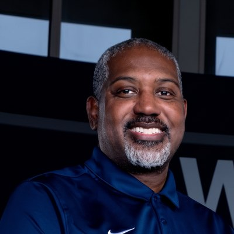

I hope and pray this message finds you all doing well.
As many of you know, I recently accepted the position of Head Girls Basketball Coach at Berkmar High School in Lilburn, Georgia. I am incredibly honored, humbled, and excited about this opportunity and the journey ahead.
Before I go any further, I'd like to provide a little background and context.
For the past 10 years, I have served as an assistant high school boys basketball coach. During that time, I also had the opportunity to serve as the head coach of both the 9th-grade and JV boys teams. Much of my role focused on ensuring the day-to-day operations of the program ran smoothly — everything from transportation, uniforms, meals, officials, and travel arrangements to assisting with on-court coaching responsibilities.
What's interesting is that becoming a head coach was never something I actively pursued or even desired.
In April, it was announced that Berkmar's Head Girls Basketball Coach had accepted a position at another school. That's when things began to change. For weeks, I felt a persistent nudge in my spirit to pursue the position. At every turn, I dismissed the idea and tried to move on. Yet the feeling never went away.
Finally, I casually mentioned to our Athletic Director that I would be interested in applying if the position had not already been filled. To my surprise, he was excited to hear it. Within days, I was sitting in his office for an interview, and less than two weeks later, I was offered the position. And here we are today.
Now that you know a little about my coaching journey, let me share some background on the Lady Patriots basketball program.
I will be the fourth coach in five years. Unfortunately, over the past four seasons, the team has won just one game each year. Last season ended with only six players remaining on the roster. The behind-the-scenes organization was virtually nonexistent, and there were no funds left within the program.
Additionally, Berkmar is a Title I school, with over 77% of students qualifying for free or reduced lunch. Last year, player dues were set at $200, yet only one player was able to pay. Contrary to what many people believe, athletic programs do not automatically receive funding from the school. The school provides access to facilities, but most program expenses must be covered through fundraising and community support.
Simply put, the program was facing significant challenges.
First and foremost, I truly believe it was a calling. This was not an opportunity I sought out; rather, it was one that continued to be placed before me.
Second, it combines two things I deeply love: working with young people and the game of basketball.
Finally, I knew that with the support of family, friends, and the community, we could begin building something special. Together, we can help transform this program and create opportunities for these young ladies that extend far beyond basketball.
We recently completed our summer program, with 14 student-athletes participating. During June, we held eight practices and competed in four games. We have already made several much-needed improvements to the locker room, and I'm excited about the progress we've made in a short period of time.
I am also happy to share that our Booster Club has officially been established, thanks to the leadership of our President and my incredibly supportive sister, Nikia. In addition, we are officially a registered 501(c)(3) organization.
To provide these young ladies with the experience they deserve, we need your help.
Running a successful basketball program requires resources, and I would sincerely appreciate any financial support you are able to provide. Contributions will help cover essential needs such as equipment, uniforms, meals, tournament fees, travel expenses, and other program costs.
These young ladies have often been overlooked, but I truly believe their time is coming. Even the small things we were able to provide this summer — a team t-shirt, a pizza party, and a few other gestures — were met with genuine gratitude and excitement. Seeing their smiles and appreciation only reinforced my commitment to giving them the best experience possible.
Thank you for taking the time to read this message and for considering supporting the Berkmar Lady Patriots Basketball Program. Your generosity, encouragement, and prayers will make a lasting impact on these young ladies both on and off the court.
We are excited about what lies ahead and look forward to a tremendous season.

Berkmar High School Lady Patriots Basketball Program